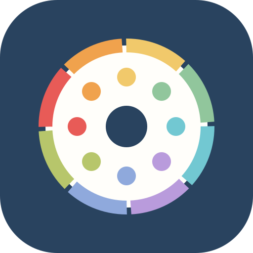

Une émotion peut être comprise comme une réponse brève à une situation importante pour la personne. Elle implique l’attention, le corps, l’expérience subjective et une tendance à agir.
Références : Scherer, 2005 ; Gross, 1998.
ÉMOTIONS
Mon repère
QUAND QUELQUE CHOSE DÉBORDE
On va le regarder
ensemble.
Quelques questions simples pour garder une trace de ce que tu vis et en parler plus facilement en séance.
Tu peux arrêter à tout moment. Il n’y a pas de bonne ou de mauvaise réponse.
ÉTAPE 1 SUR 3
Qu’est-ce qui
se passe en toi ?
Touche l’état qui se rapproche le plus de ton ressenti.
Quelle intensité ? 5/10
ÉTAPE 2 SUR 3
Qu’est-ce que
cela raconte ?
Quelques mots suffisent. Les aides s’adaptent à l’état choisi.
Ce que j’ai remarqué dans mon corps (facultatif)
Un signe peut apparaître avant que l’émotion déborde.
ÉTAPE 3 SUR 3
Pour en parler
en séance
Ces dernières réponses aideront à retrouver ce que tu ressentais.
C’EST NOTÉ
Tu pourras
y revenir en séance.
Cette observation reste dans ton appareil. Elle ne pose aucun diagnostic.
MA MÉMOIRE
Ce que j’ai
gardé
BASE SCIENTIFIQUE
Pourquoi cette app
est construite ainsi
Cette base n’est pas un diagnostic. Elle explique les principes scientifiques utilisés pour guider l’observation, la mise en mots et les exercices courts.
Mettre des mots sur une émotion peut aider à prendre du recul et à réduire la fusion avec la réaction immédiate. L’effet varie selon les personnes et le contexte.
Références : Lieberman et al., 2007 ; Torre & Lieberman, 2018.Le parcours reprend une logique utilisée en thérapies cognitives et comportementales : distinguer déclencheur, interprétations, sensations, impulsions et conséquences pour mieux choisir la suite.
Références : Beck, 2011 ; Greenberger & Padesky, 2016.Quand l’intensité monte, une courte pause peut aider à diminuer les comportements impulsifs et à retrouver une marge de choix.
Références : Gross, 2015 ; Linehan, 2015.Les exercices d’ancrage orientent l’attention vers des repères concrets du présent. Ils peuvent soutenir la régulation émotionnelle sans chercher à supprimer l’émotion.
Références : Kabat-Zinn, 1990 ; Khoury et al., 2015.Des expirations lentes ou une respiration régulière peuvent influencer l’activation autonome. L’application propose des exercices courts, à arrêter si le malaise augmente.
Références : Zaccaro et al., 2018 ; Lehrer & Gevirtz, 2014.Limites et sécurité
Cette application sert de support d’auto-observation et de préparation de séance. Elle ne remplace pas un professionnel, ne pose pas de diagnostic et ne doit pas être utilisée en situation de danger immédiat. En cas de risque pour soi ou autrui, il faut contacter les services d’urgence ou une personne de confiance.
Références principales
- Beck, J. S. (2011). Cognitive Behavior Therapy: Basics and Beyond.
- Greenberger, D., & Padesky, C. A. (2016). Mind Over Mood.
- Gross, J. J. (1998). The emerging field of emotion regulation. Review of General Psychology.
- Gross, J. J. (2015). Emotion regulation: Current status and future prospects. Psychological Inquiry.
- Kabat-Zinn, J. (1990). Full Catastrophe Living.
- Khoury, B. et al. (2015). Mindfulness-based therapy: A comprehensive meta-analysis. Clinical Psychology Review.
- Lehrer, P., & Gevirtz, R. (2014). Heart rate variability biofeedback. Frontiers in Psychology.
- Lieberman, M. D. et al. (2007). Putting feelings into words. Psychological Science.
- Linehan, M. M. (2015). DBT Skills Training Manual.
- Scherer, K. R. (2005). What are emotions? Social Science Information.
- Torre, J. B., & Lieberman, M. D. (2018). Putting feelings into words. Emotion Review.
- Zaccaro, A. et al. (2018). How breath-control can change your life. Frontiers in Human Neuroscience.
UN REPÈRE MAINTENANT
Choisir un repère
pour maintenant.
Une seule action suffit. Choisis ce qui semble possible, puis arrête si le malaise augmente.
Revenir à soi · 3–2–1
Pose les pieds au sol. Regarde 3 choses, écoute 2 sons et repère 1 sensation dans ton corps.
Mettre des mots
Complète doucement : « Je ressens ___ parce que ___. Mon besoin maintenant est ___. »
Ces repères peuvent créer un délai avant la réaction. Ils ne remplacent pas un accompagnement professionnel.